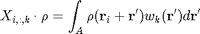
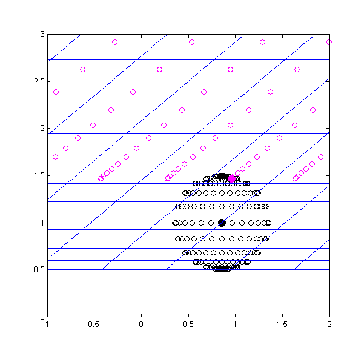
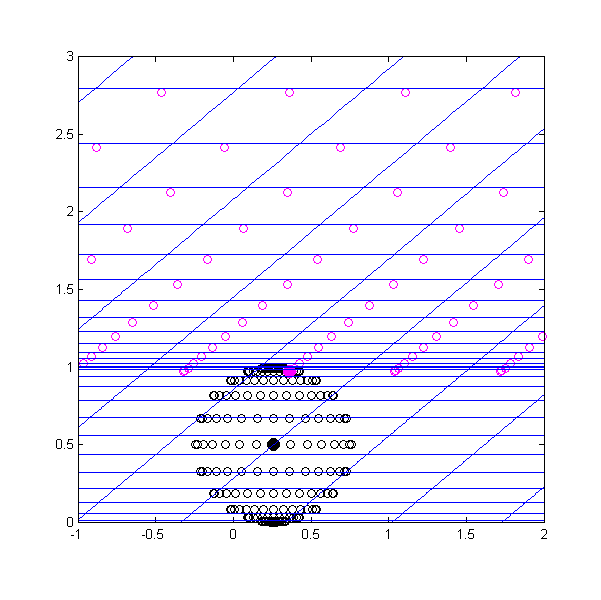

Contents
function X = Conv_LinearGridXY(this,ptsC,area,weights)
Input
- ptsC - structure with the following members: ('y1_kv','y2_kv','y1','y2') where y1_kv = kron(y1,ones(N2,1)) where y2_kv = kron(ones(N1,1),y2_kv) and y1,y2 are in the grid of the class this.
- area - structure with two methods (1) [int,A] = ComputeIntegrationVector() and (2) pts = GetCartPts(), with pts = struct(y1_kv,y2_kv)
- weights - a cell with a list of functions which get a structure with two arrays [y1_kv,y2_kv] as input and returns one array of same size. [y1_kv,y2_kv] represents a point in polar coordinates, representing the radial and angular component, respectively.
Output

- A is defined by input area
- r_i is defined through the i-th entry in the arrays of ptsC (note that the arrays in ptsC are not given in cartesian coordinates, so they have to be transformed using GetCartPts()).
Initialization
Extract relevant data from object area:
- convArea.pts - collocation points for integration in cartesian CO
- convArea.ptsOr - collocation points for integration in skewed CO used by this class
[convArea.int,convArea.area] = area.ComputeIntegrationVector();
convArea.pts = area.GetCartPts();
convArea.ptsPolLoc = Cart2PolPts(convArea.pts);
convArea.ptsOr = GetInvCartPts(this,...
convArea.pts.y1_kv,convArea.pts.y2_kv);
m = length(ptsC.y1_kv);
m1 = length(ptsC.y1);
m2 = length(ptsC.y2);
noW = numel(weights);
X = zeros(m,length(this.Pts.y1_kv),noW+1);%always include unity weight
Interp1 = zeros(length(convArea.pts.y1_kv),length(ptsC.y1),this.N1);
Interp2 = zeros(length(convArea.pts.y1_kv),length(ptsC.y2),this.N2);
interp1_mark = zeros(length(convArea.pts.y1_kv),length(ptsC.y1));
interp2_mark = zeros(length(convArea.pts.y1_kv),length(ptsC.y2));
%*************************************
%For demonstration: (with Config_2014_2_12_10_1)
% figure('color','white','Position',[0 0 600 600]);
% iPtsData = 50;
% y1pts = ptsC.y1 + convArea.ptsOr.y1_kv(iPtsData);
% y1pts(ptsC.y1 == -Inf) = -Inf;
% y1pts(ptsC.y1 == Inf) = Inf;
%
% y2pts = ptsC.y2 + convArea.ptsOr.y2_kv(iPtsData);
% y2pts(ptsC.y2 == -Inf) = -Inf;
% y2pts(ptsC.y2 == Inf) = Inf;
%
% y1_kvP = kronecker(y1pts,ones(size(y2pts)));
% y2_kvP = kronecker(ones(size(y1pts)),y2pts);
%
% ptsCCart = GetCartPts(this,ptsC.y1_kv,ptsC.y2_kv);
% ptsCart = GetCartPts(this,y1_kvP,y2_kvP);
% [~,idxP] = min((ptsC.y1_kv).^2+(ptsC.y2_kv).^2);
%
% plot(ptsCart.y1_kv,ptsCart.y2_kv,'om');hold on;
% plot(ptsCCart.y1_kv(idxP)+convArea.pts.y1_kv,ptsCCart.y2_kv(idxP)+convArea.pts.y2_kv,'ok');
% plot(ptsCCart.y1_kv(idxP)+convArea.pts.y1_kv(iPtsData),ptsCCart.y2_kv(idxP)+convArea.pts.y2_kv(iPtsData),'om','MarkerFaceColor','m','MarkerSize',10);
% plot(ptsCCart.y1_kv(idxP),ptsCCart.y2_kv(idxP),'ok','MarkerFaceColor','k','MarkerSize',10);
%
% this.PlotGridLines();
% xlim([-1 2]);
% ylim([0 3]);
% pbaspect([3 3 1]);
%*************************************
Computation of interpolation matrices


- blue lines: grid lines for coordinate system of the class 'this'
- hollow black points: points of area, shifted to be centered around black filled point
- black filled point: one point from input ptsC
- magenta points: for one iteration of iPtsData through convArea, points represented by the grid (y1pts,y2pts)
- Note: the filled black points are organized in a grid, which we do not plot here, but which can be inferred from the shifted grid on which the magenta-coloured points are located.
Interp1(iPtsData,:,:) interpolates data in the y1-direction to get data on the y1-gridlines of the grid on which the magenta-coloured points are located. This can only be done because the interpolation matrix does not depend on the y2-coordinate.
Interp2(iPtsData,:,:) interpolates data in the y2-direction to get data on the y2-gridlines of the grid on which the magenta-coloured points are located. This can only be done because the interpolation matrix does not depend on the y2-coordinate.
for iPtsData = 1:length(convArea.pts.y1_kv) %Shift data y1pts = ptsC.y1 + convArea.ptsOr.y1_kv(iPtsData); y1pts(ptsC.y1 == -Inf) = -Inf; y1pts(ptsC.y1 == Inf) = Inf; y2pts = ptsC.y2 + convArea.ptsOr.y2_kv(iPtsData); y2pts(ptsC.y2 == -Inf) = -Inf; y2pts(ptsC.y2 == Inf) = Inf; interp1 = CompSpace1(this,y1pts); interp2 = CompSpace2(this,y2pts); if(size(interp1,2) == 1) interp1_mark(iPtsData,:) = 1; else interp1_mark(iPtsData,:) = interp1(:,2); end if(size(interp2,2) == 1) interp2_mark(iPtsData,:) = 1; else interp2_mark(iPtsData,:) = interp2(:,2); end [Interp1(iPtsData,:,:),Interp2(iPtsData,:,:)] = ... ComputeInterpolationMatrix12(this,interp1,interp2); end Interp1 = permute(Interp1,[1 3 2]); Interp2 = permute(Interp2,[1 3 2]); mark_id_1 = this.mark_id_1; mark_id_2 = this.mark_id_2; mark_12 = this.mark_12; mark_id = this.mark_id;
Integration with weight functions
We go through each point ptsC (represented by the filled black point in the figure above. The data assembled in Interp1 and Interp2 is combined to obtain the interpolation of the blue grid onto the hollow black points. The data is then multiplied with the weights defined through the input weight functiones in 'weights', and integrated using the integration vector provided by the input object 'area'.
for i2Pts = 1:m2 for i1Pts = 1:m1 iPts = (ptsC.y1_kv == ptsC.y1(i1Pts)) & ... (ptsC.y2_kv == ptsC.y2(i2Pts)); IP = zeros(length(convArea.pts.y1_kv),length(this.Pts.y1_kv)); for iPtsData = 1:length(convArea.pts.y1_kv) i1mark = interp1_mark(iPtsData,i1Pts); %Get identifying dimensional ID for first dimension for given point to interpolate i2mark = interp2_mark(iPtsData,i2Pts); %Get identifying dimensional ID for second dimension for given point to interpolate IP(iPtsData,mark_id(:,mark_12(i1mark,i2mark))) = ... kronecker(Interp1(iPtsData,mark_id_1(:,i1mark),i1Pts),Interp2(iPtsData,mark_id_2(:,i2mark),i2Pts)); end X(iPts,:,1) = ones(sum(iPts),1)*(convArea.int*IP); for k = 1:noW f = str2func(weights{k}); X(iPts,:,1+k) = ones(sum(iPts),1)*((convArea.int.*f(convArea.ptsPolLoc)')*IP); end end end
Test
checkSum = convArea.area;
[errAD,ierrAD] = max(abs(checkSum - sum(X(:,:,1),2)));
y1err = ptsC.y1_kv(ierrAD);
y2err = ptsC.y2_kv(ierrAD);
PrintErrorPos(errAD,'Max. Error in Conv_LinearGridXY',y1err,y2err);
end
The class ConvolutionFiniteSupport has no property or method named 'Conv_LinearGridXY'.